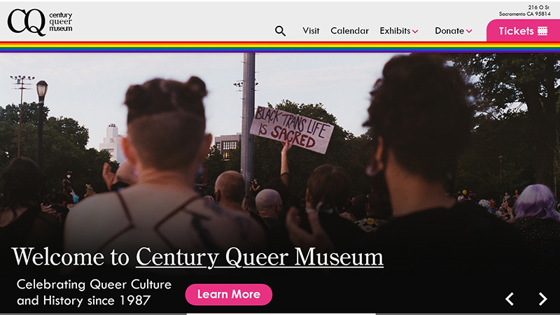

Learning Web Design
A subject that caught my particularly was the section on box shadows, and other general border elements. For example, the section on picture-perfect borders was interesting to me, especially as a concept and a tool more than actual function. I've had many experiences experimenting with border radius, drop shadows, and borders in general. I believe that border properties can essentially make or break a design, both aesthetically and in functionality.
However, as a function, border radius and box-shadow/text-shadow rules are especially important nowadays due to how much functionality they add to making a design more modern. Considering how much I use these elements in my own design, it is important to stress how useful these attributes are. Shadows on objects allow for basic layering and aid in legibility greatly, especially under text. Border radius and other border allows the creation of the different aesthetics of modern websites, particularly the rounded corners and cards. For example, this blog uses many instances of these elements to achieve that modern aesthetic!